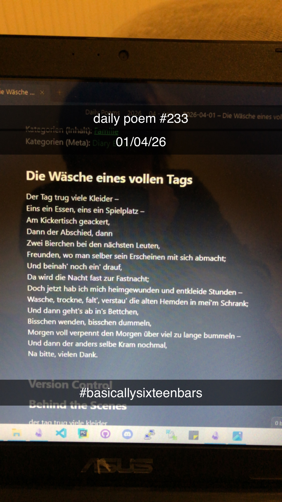

Die Wäsche eines vollen Tags
[233]Der Tag trug viele Kleider –
Eins ein Essen, eins ein Spielplatz –
Am Kickertisch geackert,
Dann der Abschied, dann
Zwei Bierchen bei den nächsten Leuten,
Freunden, wo man selber sein Erscheinen mit sich abmacht;
Und beinah' noch ein' drauf,
Da wird die Nacht fast zur Fastnacht;
Doch jetzt hab ich mich heimgewunden und entkleide Stunden –
Wasche, trockne, falt', verstau' die alten Hemden in mei'm Schrank;
Und dann geht's ab in's Bettchen,
Bisschen wenden, bisschen dummeln,
Morgen voll verpennt den Morgen über viel zu lange bummeln –
Und dann der anders selbe Kram nochmal,
Na bitte, vielen Dank.
